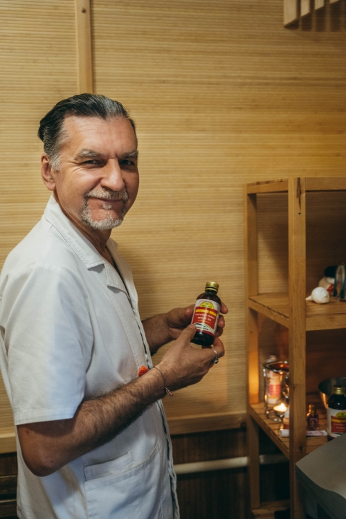
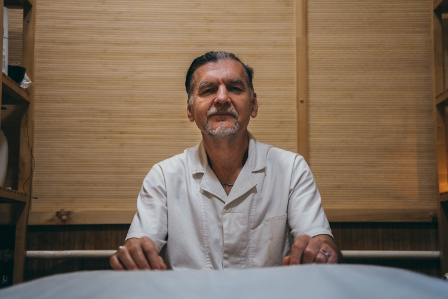
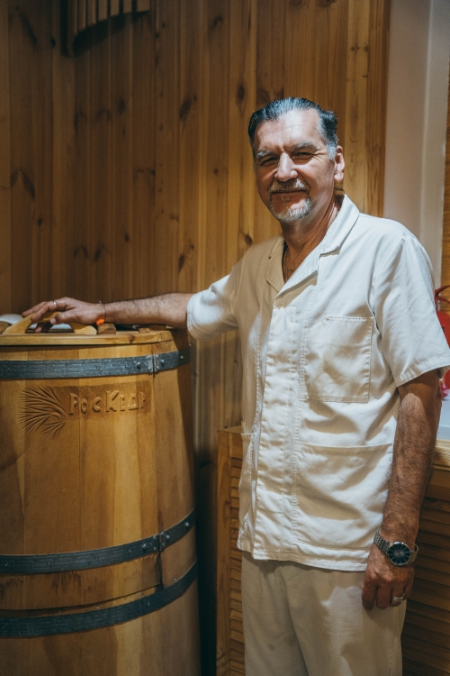
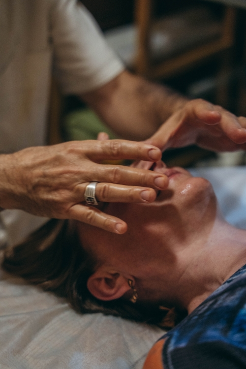
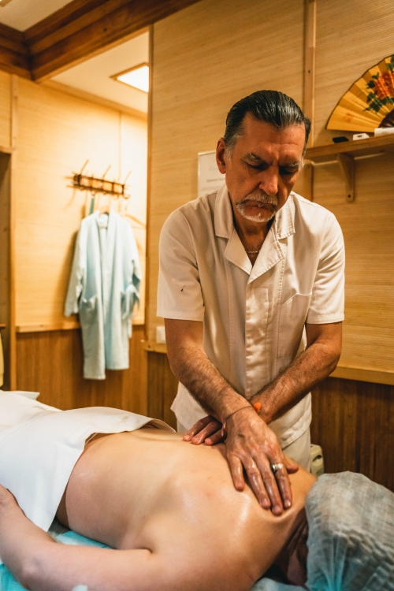
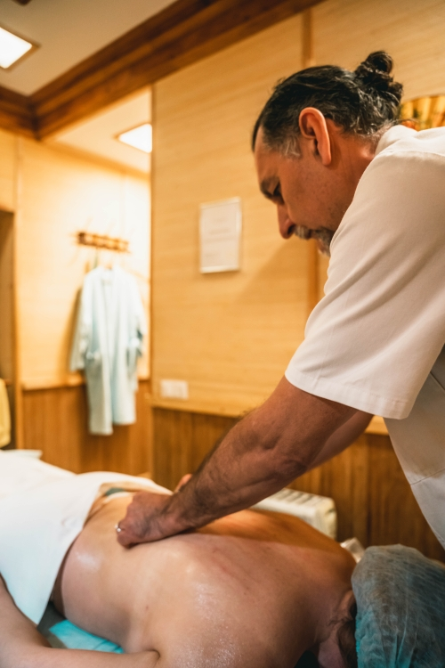
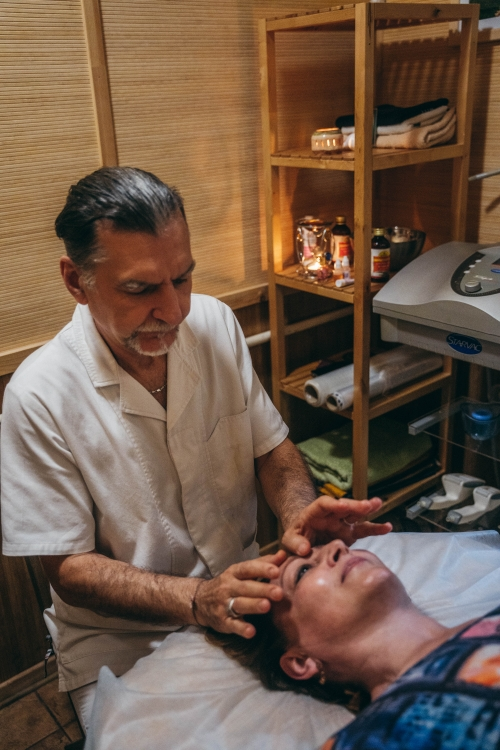

01
The cause, not the symptom
We do not just suppress pain or temporarily switch off inflammation. The goal is to understand why the body broke down and to restore balance at the root.
Consultations and individual cleansing programs with Dr. Grigory Chegorko — a physician with classical medical training and 30 years of experience in natural medicine. In person in Saint Petersburg, Gatchina, Helsinki, Cyprus, India, or online.
I reply personally, usually within a day · online consultations available



I came to Ayurveda not "instead of" medicine, but after it. Ten years in emergency medicine, twenty-five in private practice, plus regular training in India. The main principle I have kept since my student years is "Do no harm."
Modern Western medicine is good at treating acute conditions and managing symptoms. Ayurveda is about something else — about the cause, fine-tuning, and helping the body do its own work again.
We do not just suppress pain or temporarily switch off inflammation. The goal is to understand why the body broke down and to restore balance at the root.
Herbal oils, powders, ghee, honey, rice, fresh herbs. No chemicals and no side effects from taking "medicine to fix the medicine."
We define your constitution, the level of toxin build-up, and the weak systems — then build a program just for you. No templates.
Everything starts with a consultation — without it, no treatments can be prescribed. During the consultation I will identify your constitution, find problem areas, and put together a plan.
Individual constitution, level of toxin build-up, recommendations on nutrition, corrections, and any further tests. In person or online.
Traditional full-body oil massage. Removes dryness, balances the nervous system, helps with sleep problems, anxiety, and back issues.
A continuous flow of warm herbal oil onto the forehead. One of the most effective treatments for anxiety, insomnia, and chronic stress.
Work on energetically active points. Releases blocks, relaxes muscles, eases pain, and supports the work of the internal organs.
Dry massage with fat-burning herbal powders. Anti-cellulite and lymphatic drainage effect. Helpful for excess weight, varicose veins, and diabetes.
Clears mucus and cleanses the nose and throat. Improves breathing, oxygen levels in the blood, and cleanses everything above the collarbones.
Work with special oils and active points on the face. More than skincare — it brings calm and inner balance.
Analysis based on the date, place, and time of birth. Helps to see deeper causes of illness and recurring psychological patterns.




A set of Ayurvedic treatments that bring the whole body back into balance. Designed individually after a consultation. The course lasts 1–3 weeks. Panchakarma is what makes it possible to deal with chronic illness, autoimmune issues, and imbalances of the neuroendocrine system — and gives a clear rejuvenating effect.
Real stories from people who have taken courses and consultations with me. Full texts and videos — nothing edited out.
I have been working with Dr. Chegorko for three years. We met by chance — and as we know, nothing happens by accident. After my first Panchakarma my digestion and immune system were restored for a long time: through the whole winter I did not get sick once, not even a runny nose. And that was while everyone around me at home was ill and coughing in my face — my small child was in kindergarten at the time. The past year was full of stress, and my immune system, autonomic nervous system, and heart all faltered (the result of stress — tachycardia). Dr. Chegorko was literally my emergency help and twice "pulled" me and my nervous system back from the edge. The Panchakarma oil massages brought me back into balance. I could physically feel things getting easier and feel like myself again. I cannot remember the last time I felt that — full balance in mood and in the body. When you talk with Dr. Chegorko, you start to understand yourself and your accumulated questions through your constitution and the reasons behind your imbalances. Beyond the help itself, talking with him is incredibly pleasant. You feel real support and real care. I am grateful to the universe that I met such a wonderful doctor and person on my path.

I do not work from a single office — Panchakarma courses need time and the right setting. Here is where you can come for a consultation and treatments right now.
Regular consultations, treatments, and Panchakarma programs.
Visiting appointments and the full range of Ayurvedic treatments.
Appointments and Panchakarma courses for patients from Europe.
Seasonal Panchakarma courses in a small, comfortable hotel among banana plantations.
Large autumn Panchakarma programs in real Indian clinics.
Diagnostics, choosing nutrition and herbs, preparation for a future course.
With a consultation — in person or online, 60 minutes, 3,000 ₽. During it I will define your individual constitution, find problem areas, and tell you whether you need Panchakarma, separate treatments, or simply a change in nutrition.
No, and I never suggest that. Ayurveda complements modern medicine: it works where pills only mask the symptom, and it helps the body cope on its own. Acute conditions always need conventional medical care.
From 7 to 21 days. A short course is good for support, while full cleansing and a real reset of the systems need 14–21 days. The plan is built individually after the consultation.
Yes. Acute conditions, decompensated chronic illness, and pregnancy. All of this is discussed during the first consultation — if needed I will recommend extra tests.
In person I can see more (pulse, skin, posture). Online is excellent diagnostics through symptoms, history, nutrition, and lifestyle. For patients in other cities and countries the online format works very well.
For in-person treatments — on site. For online consultations and course bookings — by agreement through messengers: choose what is convenient for you.
The fastest way is WhatsApp or Telegram. Write freely: what is troubling you, where you are, and what format suits you best.
Subscribe to the doctor's channel —
@dr_chegorko
(news about courses, useful Ayurveda tips, schedules)